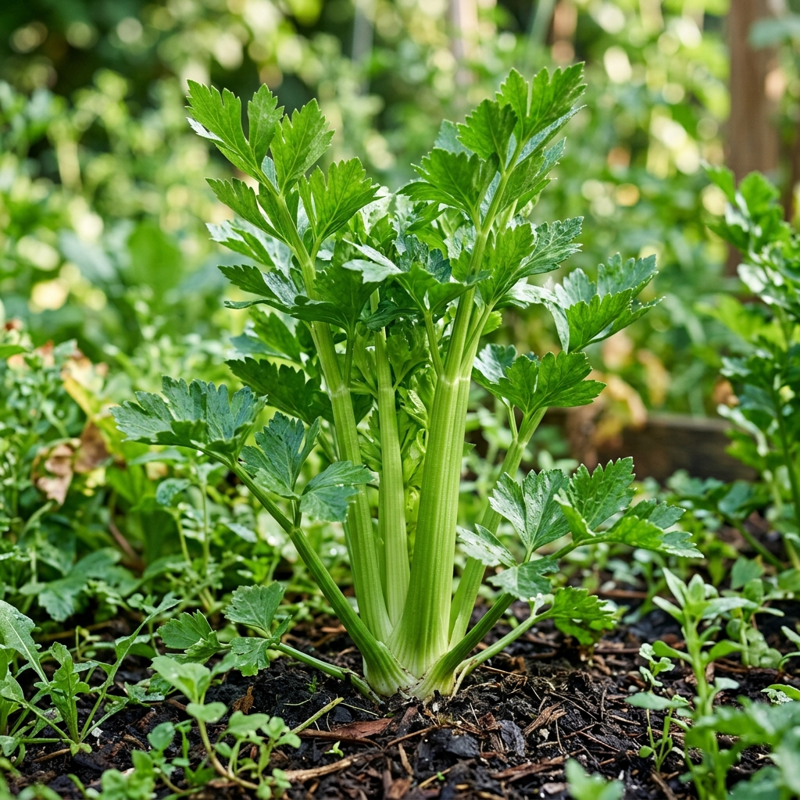
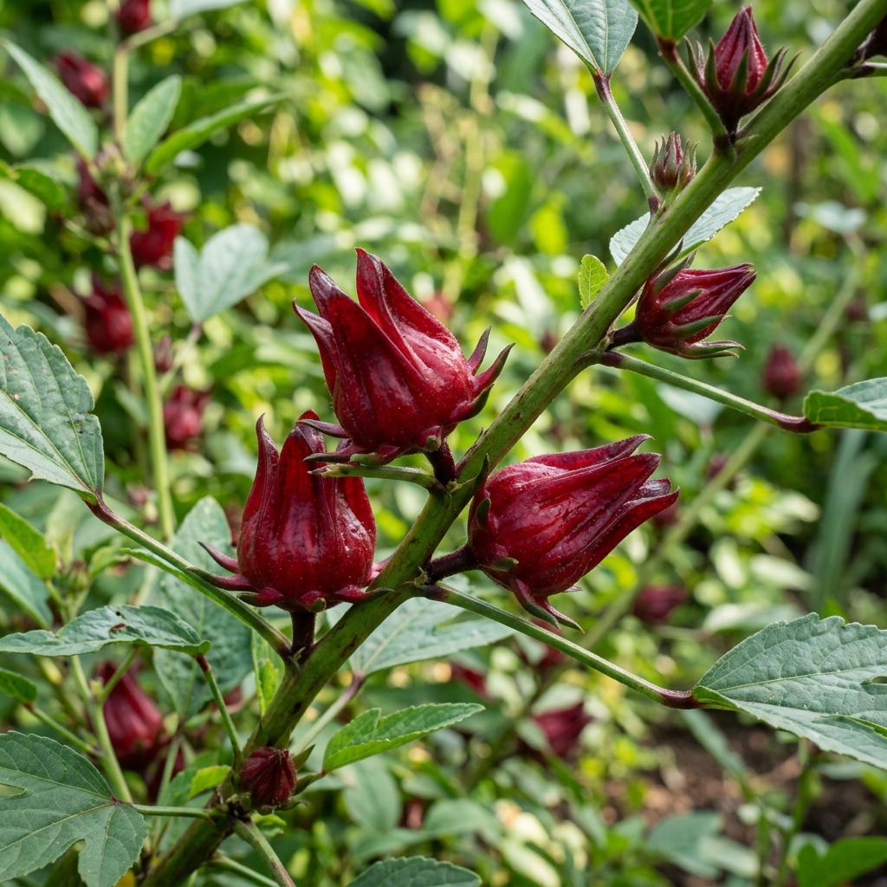
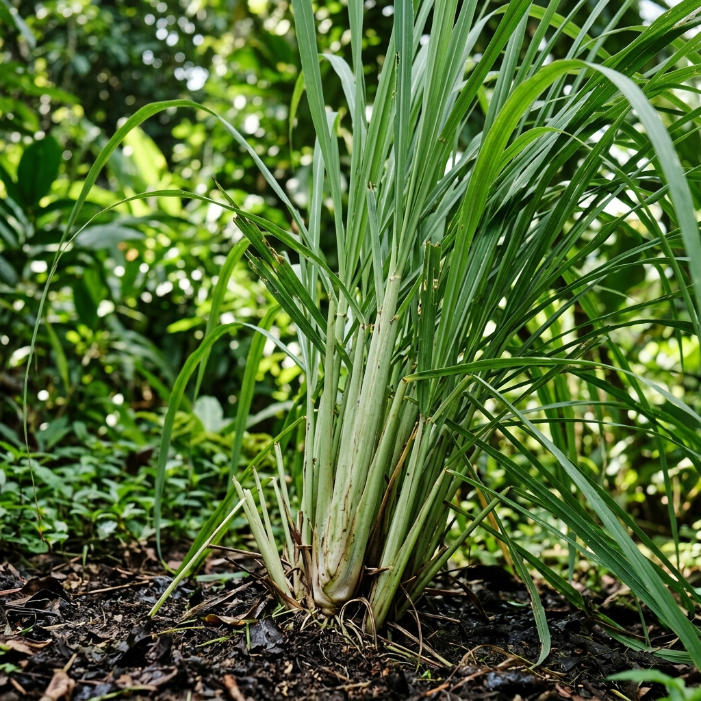
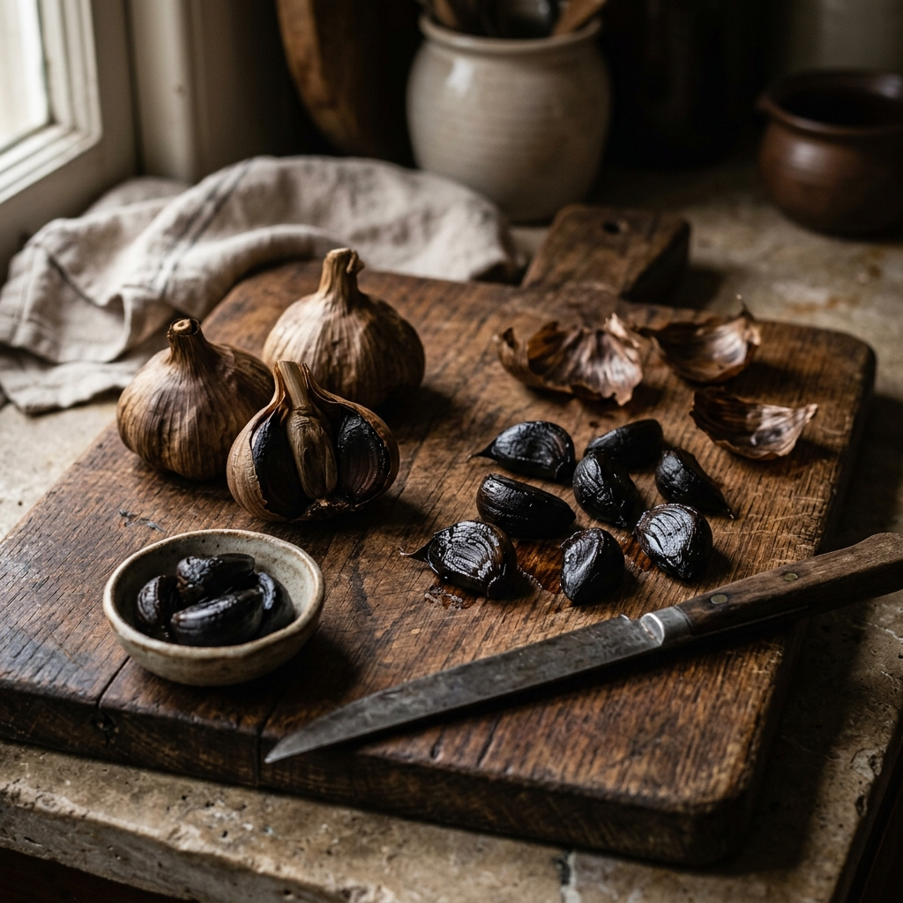

Seledri
Mengandung phthalides yang mengendurkan pembuluh darah, sehingga aliran darah lebih lancar.
Berikut adalah versi ringkas yang berfokus pada hipertensi beserta inspirasi olahan sehatnya.
Lima tanaman obat keluarga yang telah terbukti memiliki khasiat membantu menjaga tekanan darah tetap stabil.

Mengandung phthalides yang mengendurkan pembuluh darah, sehingga aliran darah lebih lancar.
Kaya allicin untuk melebarkan pembuluh darah dan mencegah kekakuan nadi.

Bersifat diuretik alami; sangat efektif menurunkan tekanan darah sistolik dan diastolik.
Mengandung eugenol yang bekerja memblokir saluran kalsium untuk merilekskan pembuluh darah.

Membantu ginjal membuang kelebihan garam (natrium) melalui urine, sehingga beban pembuluh darah menurun.
Setiap tanaman memiliki mekanisme kerja yang unik dalam membantu menurunkan dan menstabilkan tekanan darah.
Mengandung phthalides yang mengendurkan pembuluh darah, sehingga aliran darah lebih lancar.
Kaya allicin untuk melebarkan pembuluh darah dan mencegah kekakuan nadi.
Bersifat diuretik alami; sangat efektif menurunkan tekanan darah sistolik dan diastolik.
Mengandung eugenol yang bekerja memblokir saluran kalsium untuk merilekskan pembuluh darah.
Membantu ginjal membuang kelebihan garam (natrium) melalui urine, sehingga beban pembuluh darah menurun.
Dua olahan berbahan dasar tanaman TOGA yang nikmat dikonsumsi sehari-hari untuk membantu menstabilkan tekanan darah.

🧄 FermentasiBawang putih tunggal yang melalui proses fermentasi akan berubah warna menjadi hitam dengan tekstur kenyal dan rasa manis-asam. Proses ini melipatgandakan kandungan antioksidannya, menjadikannya jauh lebih ampuh untuk menstabilkan tekanan darah dan menyehatkan jantung tanpa meninggalkan bau menyengat.
Dibuat dari kelopak bunga rosella yang dikeringkan. Seduhan teh berwarna merah merona ini tidak hanya menyegarkan, tetapi juga berfungsi sebagai peluruh kencing (diuretik) alami yang nikmat untuk membantu menurunkan tensi serta memberikan asupan Vitamin C yang tinggi.
Informasi kebutuhan cahaya, penyiraman, dan media tanam untuk masing-masing tanaman TOGA.
| 🌱 Tanaman | ☀️ Kebutuhan Cahaya | 💧 Penyiraman | 🌍 Media Tanam & Perawatan Khusus |
|---|---|---|---|
| 🥬 Seledri | ☀️ Teduh sebagian | 💧 Lembap (tidak becek) | 🌱 Tanah gembur berhumus |
| 🧄 Bawang Putih Tunggal | ☀️ Penuh (Full sun) | 💧 Sedang (hindari genangan air) | 🌱 Tanah berpasir, drainase lancar |
| 🌺 Rosella | ☀️ Penuh (Full sun) | 💧 Rutin (1-2x sehari) | 🌱 Tanah dicampur kompos organik |
| 🌱 Kemangi | ☀️ Parsial hingga Penuh | 💧 Tinggi (siram setiap hari) | 🌱 Rajin pangkas pucuk agar daun lebat |
| 🌾 Sereh | ☀️ Penuh (Full sun) | 💧 Sedang (tahan kering) | 🌱 Toleran di berbagai tanah; pecah rumpun jika padat |
Teknologi modern untuk perawatan tanaman TOGA yang lebih efisien dan optimal.
Untuk skala lahan pertanian terpadu atau pedesaan, integrasikan sistem penyiraman otomatis. Sistem ini memastikan tanah tetap pada tingkat kelembapan ideal tanpa perlu penyiraman manual setiap hari.
Sistem ini menggunakan pengaturan katup air mancur dan katup sprayer tanaman yang berfungsi sebagai pengarah aliran air. Aliran air ini hanya bisa dipilih salah satu saja, jika katup air mancur ON, maka katup sprayer tanaman akan OFF, dan begitu pula sebaliknya.